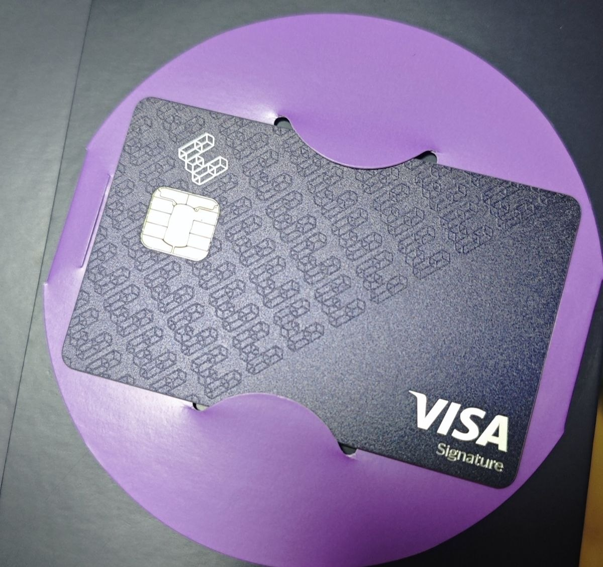
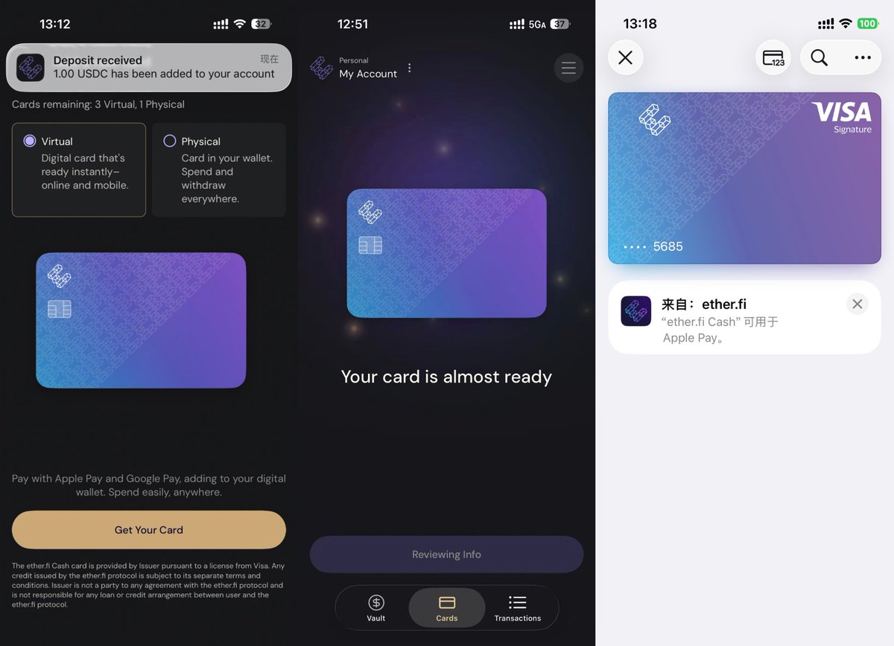
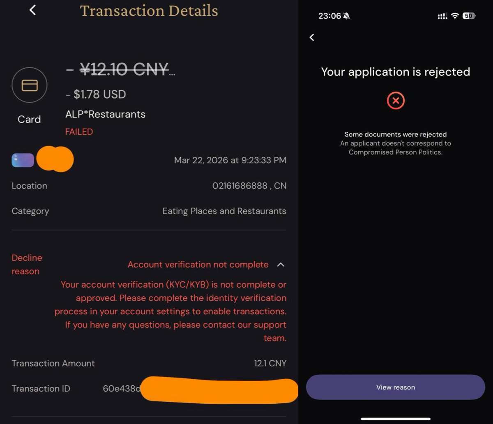

以太坊再质押协议https://t.co/lKNmOrpSC2今天下午短暂开放CN护照（海外地址）用户开户，开户成功的用户正在陆续被撤销实名认证状态，使用该卡付款时会decline并告知用户未完成实名认证，并提示不接受该证件申请。
该卡第一档会员可免费申请金属卡(DHL寄香港)，BIN为45492406且返现3%（部分餐饮10%），可绑定微信、支付宝、美团，支持Apple Pay/GPay。同时可拥有4张虚拟卡，消费美元没有货转（ftf），需要提交海外地址证明（支持Wise、N26等银行账单）
总之感觉是灵车，还是别乱上。这家的卡算是Infini最早的上游，跟EXA和Avalanche（血崩卡）同款BIN，都快要被羊毛党撸黑卡头了😓
该卡第一档会员可免费申请金属卡(DHL寄香港)，BIN为45492406且返现3%（部分餐饮10%），可绑定微信、支付宝、美团，支持Apple Pay/GPay。同时可拥有4张虚拟卡，消费美元没有货转（ftf），需要提交海外地址证明（支持Wise、N26等银行账单）
总之感觉是灵车，还是别乱上。这家的卡算是Infini最早的上游，跟EXA和Avalanche（血崩卡）同款BIN，都快要被羊毛党撸黑卡头了😓


